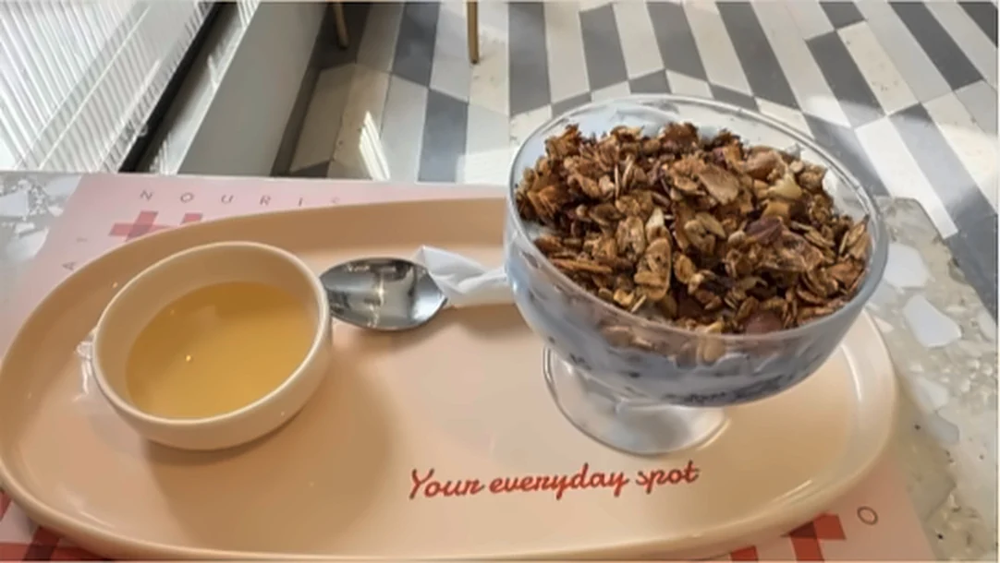

Beano's: a heritage that needs to stay young.
Alaa visited five of your branches in one week, 3 to 9 November 2026. This is what she found, where the gaps are, and the plan to close them. Take the journey: it takes about five minutes.
We start from strength.
What does Beano's already own that no new café can buy?
from about 4,800 elmenus ratings. Regulars are mostly Gen X and millennials who grew up with it.
S3La Poire Group behind us: six brands, one of the industry's largest manufacturing facilities, a bakery heritage since 1975.
S2A real in-house bakery
Fresh bread, tarts, whole cakes to order, Turkish coffee, beans, capsules, snack bars, granola and mugs.
S1F1GEM, a flagship nobody else has
A museum-setting branch designed by SHEWEKAR in 2023, a ceiling-design winner at the Restaurant & Bar Design Awards.
The Zamalek standard
Honest answers, fixes in one minute and a team that reads the table.
Orange is already ours
Orange cups, a seasonal winter cup, branded bags and mini cakes with the coffee.
Guests who already stay for hours
Laptop workers, families, athletes and students: the audience for a Wi-Fi sign-in and an app is already in our seats.
Five branches. One brand. Five different experiences.
Is a guest at 90th Street getting the same Beano's as a guest at U Venues?



The gap map
Tap any square to read what we saw. Tap a branch name to see its shape.
All branches
Same brand, different numbers
Eight moments. Three to fix first.
Where does a guest's visit go right, and where does it slip?
Nine gaps we can close together.
What do we fix now, and what do we plan?
A Cairo original that grows with you.
What should every guest say after a visit? “Beano's fits every part of my day.”
A Cairo original that grows with you.
At home: welcomed fast, known by name, comfy for hours.
Heritage, a real bakery, a seat for work, study, meet and reset.
“Beano's fits every part of my day.”
Six guests, six reasons to come
Four campaigns. One calendar. A clear goal each.
What do we run, when, and what does success look like?
Bars are approximate. Ramadan dates depend on moon sighting, and the Morning Club bar assumes the 90-day plan starts in January 2027. Founding week is not shown because its date is not set.
Back to Beano's
from March 2027Goal: 10% more visits in 8 weeks
Invite past guests back to see what's new: “Remember your first Beano's?” and a free mini cake when they return.
The Morning Club
from day 31Goal: 15% more orders before 11 am
Join through the Wi-Fi page or app; every 8th breakfast is free.
Signature Collection
every seasonGoal: 12% of drink sales
Drinks you can only get at Beano's: a new iced or wellness drink each season.
Still Brewing, since 2000
always onGoal: 2× more stories shared
Regulars' stories, the Triple Layer Cheesecake and a memories contest.
Where we show up
Share of Egyptian adults each platform reaches. TikTok first for Gen Z, and it grew 18% in a year. Instagram stays for heritage and regulars. S10
Five things we always talk about
Hybrid delivery: an in-house core for daily content and community, agencies for big campaigns, media buying and PR. Decision by Day 30.
Goals are proposals, locked once the day-30 baselines exist.
Next: the growth engine ↓Revenue is guests × visits × check.
What if each of the three grew by just 5%?
Three small gains multiply into a big one. The 2027 target is revenue up 15% in the same branches, compared with 2026 (proposed). This is the maths, not a forecast.
Wi-Fi sign-in
Phone number plus a clear opt-in. Pilot at 90th Street and Makram Ebeid.
30% opt-in by Month 3 (proposed)App and Morning Club
One tap to the Wi-Fi, an instant reward, the 8th breakfast free.
15% of weekly guests by Day 90 (proposed)Stay in touch
WhatsApp offers and a win-back after 30 days away.
Repeat visits up 10 percentage points in 12 months (proposed)Own app, in full
Points, order-ahead and offers.
2029What we do with what we know
Wi-Fi sign-in first, then the app. Egypt's data protection law needs a separate, unticked marketing opt-in in Arabic, to be confirmed with Beano's counsel before launch. Open the growth engine.
Next: what we will have in 30, 60 and 90 days ↓What we will have in 30, 60 and 90 days.
What does the information turn into?
We know where we stand
- One dashboard: one view of the guest and the sales
- Baselines set for repeat rate, opt-in, average check and drink wait, and the targets locked
- Quick wins live: drinks first, order check, product facts card, upsell line
- Agency, in-house or hybrid decided
- Day-30 report
The engine is switched on
- 100% of staff trained on the Service Playbook
- Wi-Fi sign-in live in two pilot branches, opt-ins counted
- Morning Club pilot at 90th Street and Makram Ebeid
- 3 partners on board and 7 posts a week
- A sign above every counter; branded sachets ordered
We have proof and a plan
- Members at 15% or more of weekly guests (proposed)
- Kids' menu pilot at District 5; retail at eye level
- First big seasonal campaign out
- Pilots evaluated, branches re-scored, what worked rolled out
- Day-90 report, next-quarter plan, Year-1 budget; app or web sign-in chosen
Targets marked proposed stay proposals until the day-30 baselines exist.
Next: the roadmap ↓Quick wins first, then the bigger moves.
Where does it lead in 2027, by 2031 and by Month 12?
Rebuild
Brand platform, one slogan and identity; team in place; Ramadan and Eid.
Measure: Ramadan sales up 10%Relaunch
Back to Beano's; Morning Club everywhere; kids' menu; summer drop; app decision gate.
Measure: Number of orders up 10%New guests
A summer pop-up on the North Coast (Sahel); a card made for students; partnerships with universities and with B-urn, the fitness studio next to Zamalek.
Measure: Guests aged 18 to 24 grow by 5 percentage points as a share of all guestsHeritage
Still Brewing anniversary; festive gifting; new branch site chosen.
Measure: Gift boxes at least 80% soldRebuild
Platform, identity, loyalty, kids' menu
Revenue up 15% in the same branches, compared with 2026Expand
Heliopolis, Sahel, a second drive-through, retail
New branches pay back their cost within 36 monthsInnovate
Own app, Beano's Academy, innovation lab
Top 2 local café among guests aged 18 to 35Go regional
First branch abroad, in a tested market
A branch abroad is profitable within 24 monthsLead
Loved by three generations; retail at scale
30+ branches; retail is 10% of saleslocal café that “fits every part of my day”, among guests aged 18 to 30, by Month 12
of drink sales are Signature drinks, and profit margin is up 2 percentage points, by Month 12
every branch scores at least this in our branch audit, and the guest recommendation score (NPS) is 50 or more, by Month 12
social media engagement compared with today, and 50,000 followers, by Month 12
of weekly guests are members, with 8 partners, by Month 12
revenue in the same branches, compared with 2026, by Month 12
All targets are proposals until the day-30 baselines exist. Expansion steps sit behind gates. Open the full roadmap.
Next: three decisions ↓Three decisions to start.
What do we need from the team to begin?
The count
How many branches do we count today, 22 or 40, and what does each include?
The owner
Who owns the plan, and who signs off briefs, budget and agencies?
The first five numbers
Revenue by branch, sales and margin by item, average check, channel split and the 2017 app data.